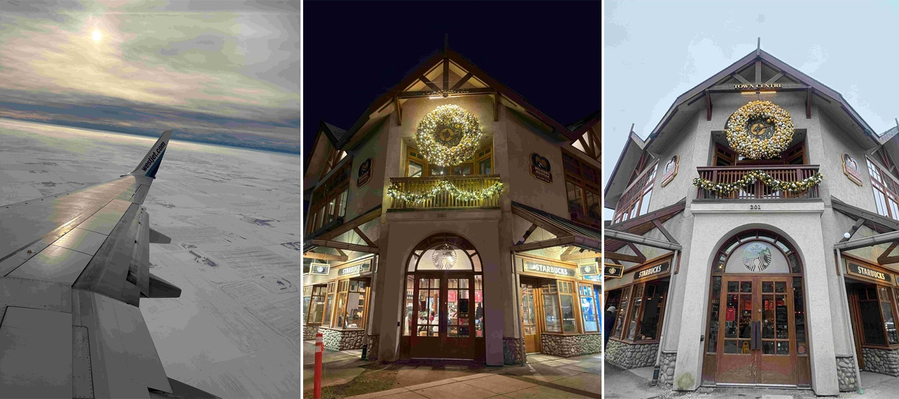
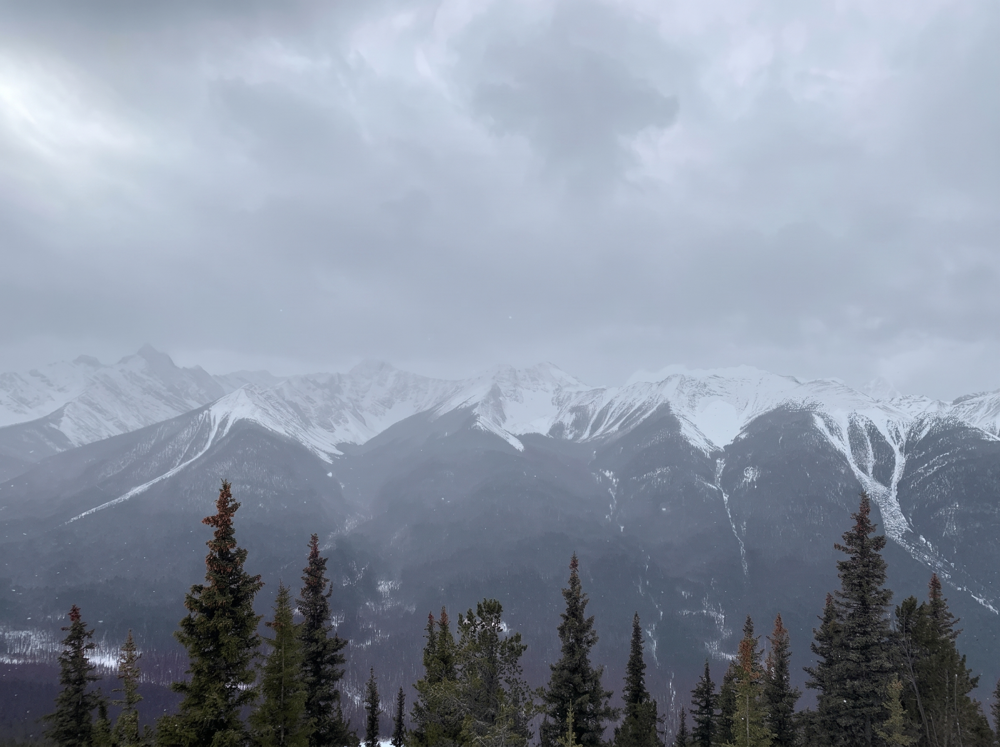
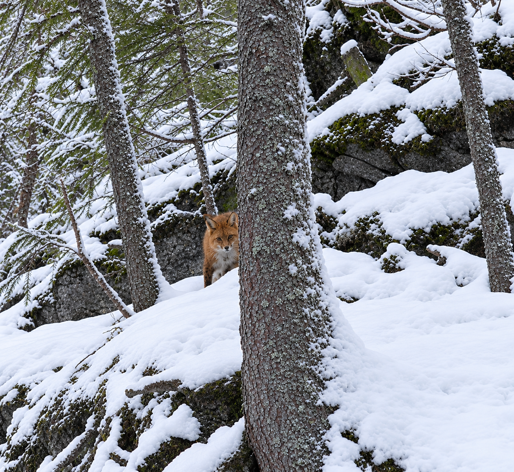
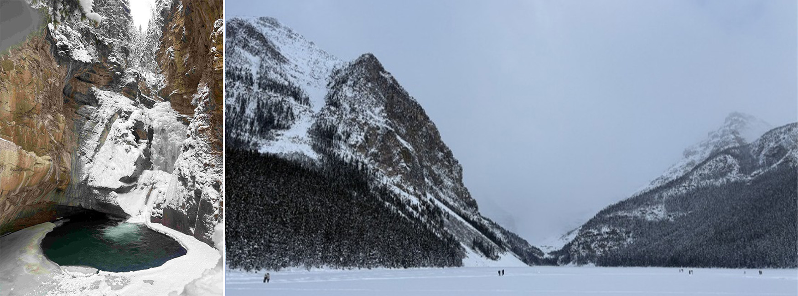
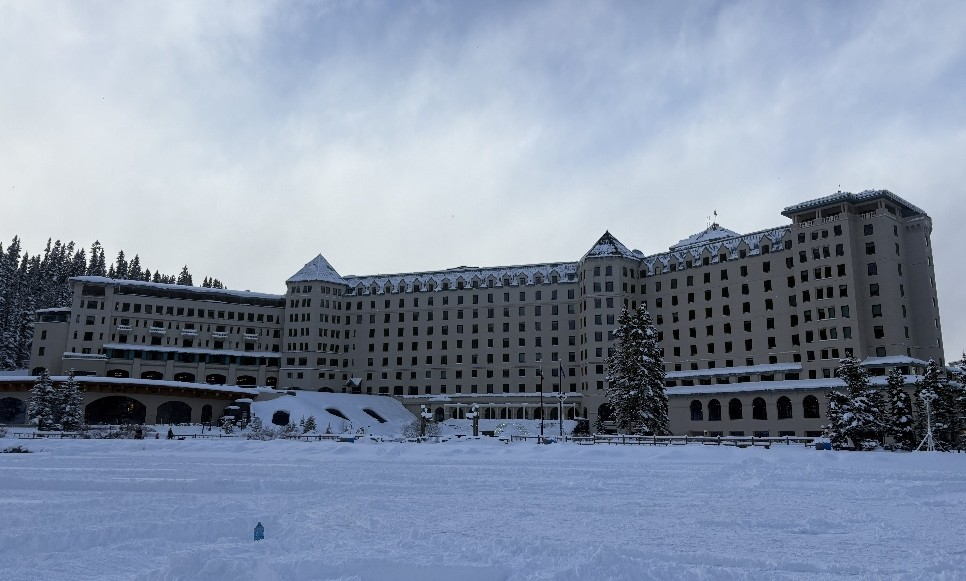
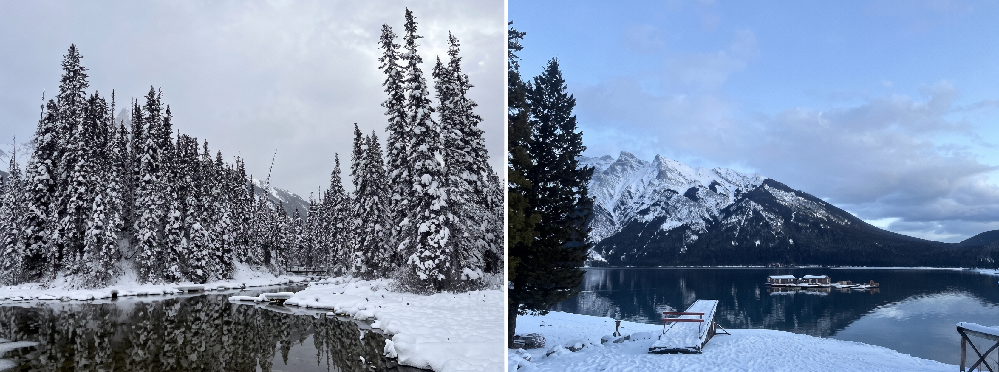

踏上加拿大內陸，一次走訪三座各具風情的城市—卡加利、班夫與坎莫爾。其中，最令人期待的，莫過於眾人一致推薦的「班夫」。
冬天的班夫，有著與其他季節截然不同的魅力。結冰的湖泊、覆蓋白雪的山巒，搭配小鎮上木質色調的建築，構成一幅很有層次的冬日風景。走在小鎮街道上，隨處都能看見壯麗的雪山，讓人不自覺放慢腳步，欣賞眼前的景色。
直到旅行結束後才發現，原來韓劇《愛情怎麼翻譯？》也曾在這裡取景，難怪這裡的每個角落都像電影場景一樣。班夫不只有壯闊的自然景觀，也有小鎮獨有的溫度，確實是個值得親自走訪的地方。
靠著友人的好人緣，抵達小鎮飯店 Check-in 時，意外獲得升等，直接入住最高樓層、擁有絕佳視野的房間，也算是旅途中的一大驚喜。
 |
另外，推薦一個有點瘋狂、卻非常值得體驗的活動。如果飯店有戶外溫泉，絕對不要錯過！在零下的低溫中，頂著飄落的雪花泡進熱呼呼的溫泉，感受冷空氣與溫泉交錯的「冰火兩重天」。抬頭還能欣賞沒有光害、格外清晰的夜晚星空，再配上一杯啤酒，這種享受真的只有親身體驗才能感受！
除了漫步在小鎮街道，也別錯過周邊的自然美景。來到「班夫國家公園」，當然要搭乘纜車登上硫磺山。而隨著纜車緩緩爬升，眼前的視野也逐漸開闊，連綿不絕的雪山與山谷盡收眼底。雖然風有點大、很冷，但眼前的景色絕對是令人嘆為觀止。
 |
參加當地的 One-day Tour 其實是相當方便的選擇。畢竟冬天的加拿大到處都是冰雪，對於沒有雪地駕駛經驗的人來說，自駕不僅有一定的風險，部分景點的路線也不太好找，加上有些區域在冬季會限制一般車輛進入。直接選擇無腦跟團，省時又省力，可以把重心放在好好欣賞風景。
我的 One - day Tour 行程（從山景看到湖景）是「Johnston Canyon — Lake Louise — Emerald Lake — Lake Minnewanka」。
第一站「Johnston Canyon」，我運氣有點好，沿路看到野生肥嘟嘟的狐狸！
 |
第二站來到「路易斯湖（Lake Louise）」，可以說是班夫最具代表性的景點之一，沒來過這裡，彷彿就不算真正到過班夫！這座湖泊以英國的路易斯公主命名，未結冰時，湖水呈現如寶石般清澈透亮的藍綠色。
雖然我是 12 月造訪，取而代之的是一整片銀白色的冰雪世界，但被雪山環繞的湖面別有一番風味，而且可以走在結冰的湖面上，又是一種不一樣的體驗！
 |
旁邊是一間貴到我住不起，可以直接整個湖景的的五星級飯店「路易斯湖城堡飯店」，所以拍拍景色就好。
 |
第三、四站，就是繼續看湖景，沒有停留太久，所以就把照片在最下面給大家欣賞瞜！巴士開回市區經過幽鶴國家公園時，意外遇上遠遠的前方，正在進行「人工雪崩控制」，就是透過人工引爆炸藥，讓積雪在可控的情況下提前崩落，降低大規模雪崩的風險。第一次親身遇上這樣的作業，聽見現場爆破的聲響，還真的是長了知識，也成了這趟旅程中意想不到的特別體驗。
 |
| 第三站：Emerald Lake。 第四站：Lake Minnewanka。 |
總結這三天兩夜的班夫之旅，雖然時間不長，卻留下了許多難忘的回憶。從壯闊的洛磯山脈、銀白色的冰封湖泊，到充滿特色的山中小鎮，每一處風景都讓人印象深刻。
這趟旅程更是我人生第一次親眼見到雪，沿路跟小屁孩沒兩樣做雪球、丟雪球、飛撲進雪堆、躺在地上當雪天使，也體驗不少新鮮事物。如果未來還有機會，希望能在不同的季節再次造訪，看看班夫的另一種風貌。